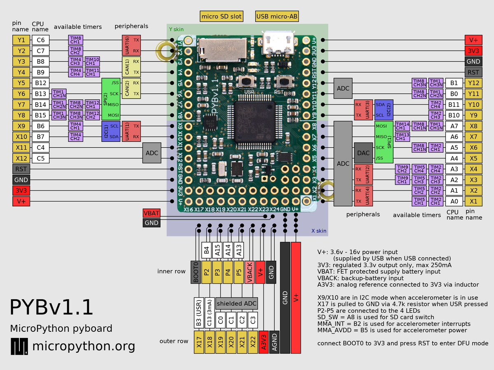
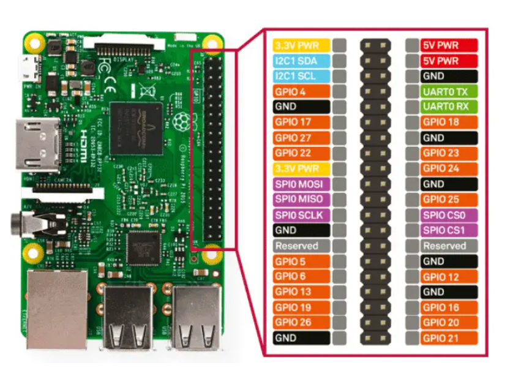
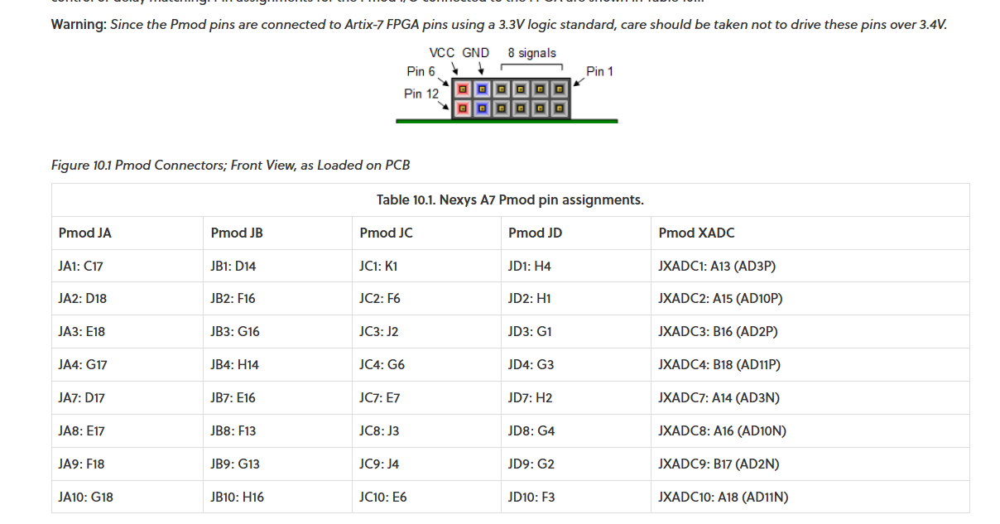

PINS
STM32 JLink
1.VDD_Target
2.SW_CLK
3.GND
4.SW_DIO
5.NRST
6.SW_O
PyBoard STM32F405

FT2232
FT245 Fifo
| Pin Name | Functions | I/O |
|---|---|---|
| AD0 ~ AD7 | D0 ~ D7 | IO |
| AC0 | RXF# | output |
| AC1 | TXE# | output |
| AC2 | RD# | input |
| AC3 | WR# | input |
| AC4 | SIWR# | input |
| AC5 | ClockOut | output |
| AC6 | OE# | input |
PyFTID Doc
SPI and Other Pins

FT2232 Code
from pyftdi.ftdi import Ftdi
Ftdi.show_devices()
from pyftdi.spi import SpiController
spi.configure('ftdi://ftdi:2232h:1:7b/1')
slave = spi.get_port(cs=1, freq=10E6, mode=2)
write_buf = b'\x01\x02\x03'
read_buf = slave.exchange(write_buf, duplex=True)
Raspberry Pi
Pi 4 IO

FPGA
Nexy A7 PMod

Efinix T20